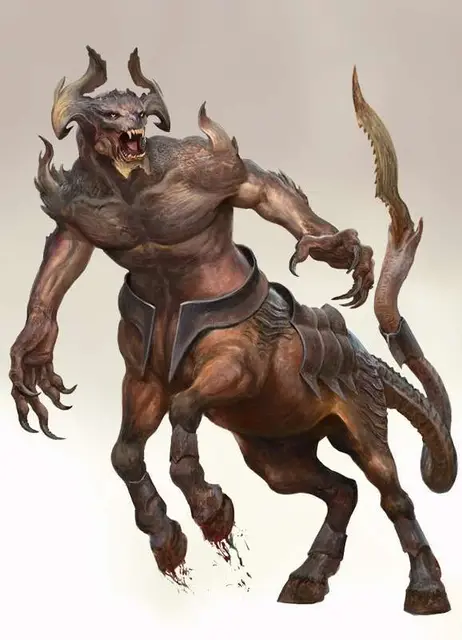

Арманит
Armanite
Большое Исчадие (Демон), обычно хаотично-злое

Класс Доспеха 16 (Природный доспех)
Хиты 94 (9к10 + 45)
Скорость 60 футов
| мод | спас | ||
|---|---|---|---|
| СИЛ | 21 | +5 | +5 |
| ЛОВ | 18 | +4 | +4 |
| ТЕЛ | 21 | +5 | +5 |
| мод | спас | ||
|---|---|---|---|
| ИНТ | 8 | −1 | −1 |
| МДР | 12 | +1 | +1 |
| ХАР | 13 | +1 | +1 |
Сопротивление урону огонь, холод, электричество
Иммунитет к урону яд
Иммунитет к состояниям отравление
Чувства тёмное зрение 120 футов, пассивное Восприятие 11
Языки Бездны, Телепатия 120 фт.
Опасность 7 (2900 опыта)
Бонус мастерства +3
Среда обитания Подземье
Особенности
Сопротивление магии. . Арманит совершает с преимуществом спасброски от заклинаний и прочих магических эффектов.
Действия
Мультиатака. Арманит совершает одну атаку Когтями, одну атаку Копытом и одну атаку Зазубренным хвостом.
Копыта. . Рукопашная атака оружием: +8 к попаданию, досягаемость 5 футов, одна цель. Попадание: 12 (2к6 + 5) дробящего урона. Если цель - существо Большого размера или меньше, то она должна преуспеть в спасброске Силы Сл 16, иначе будет сбита с ног.
Когти. . Рукопашная атака оружием: +8 к попаданию, досягаемость 5 футов, одна цель. Попадание: 10 (2к4 + 5) рубящего урона плюс 9 (2к8) урона электричеством.
Зазубренный хвост. . Рукопашная атака оружием: +8 к попаданию, досягаемость 10 футов, одна цель. Попадание: 16 (2к10 + 5) рубящего урона.
Молниевое копьё (перезарядка 5-6). . Арманит высвобождает вспышку молнии прямой линией длиной в 60 футов и шириной 10 футов. Каждое существо, оказавшееся в этой линии, должно совершить спасбросок Ловкости Сл 15, получая 36 (8к8) урона электричеством при провале, или половину этого урона при успехе.
Описание
Огромные стада арманитов бегут по взрывающимся полям Бездны, обречённые на бойню и смерть,вызванные безудержной жаждой крови. Вне зависимости от того, контролируются ли они более могущественными демонами или рвутся в битву ради процесса, арманиты используют свои когти, копыта и длинные хвосты для раздирания врагов на части.
В армиях Повелителей Демонов, Арманиты выполняют роль тяжёлой кавалерии, возглавляя броски и атаки, прорубаясь во фланги противников. Арманиты всё время сражаются, даже друг с другом, если не могут найти других противников. Из них получаются идеальные ударные отряды, до глупости отважные и безжалостные.
Одна из причин, делающих Арманитов настолько бесстрашными, это количество оружия, находящегося в их распоряжении. У них острые копыта, лапы, что заканчиваются крючковатыми когтями и длинные, разделённые хвосты, которые способны сдирать кожу с несчастных. И всё это они используют, чтобы проходить через своих врагов. Против плотного строя они могут призвать свою внутреннюю магию, выпуская молнии и создавая брешь в рядах противника.